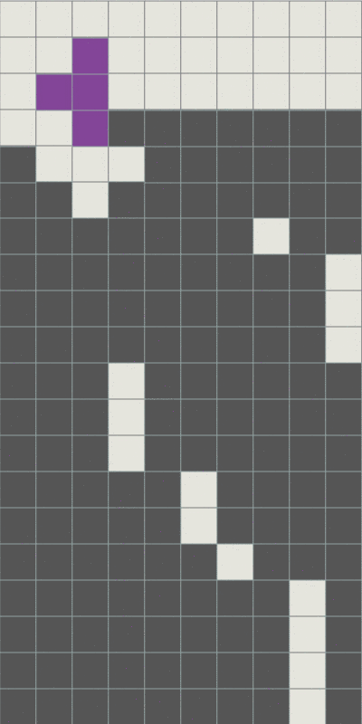

積み 対人戦における積み
攻撃
BackToBack
BackToBackはテトリスかT-Spinを継続して行うことでボーナスが付くことです．攻撃を送る際に，意識することで攻撃力が上がります．
平積みは，綺麗につめばBackToBackを維持しやすいです．
TSDなどを絡めると難しくなりますが，地形を崩してまで維持しなければならない状況かどうか判断しましょう．
コツとしては，テトリスやT-Spinで消去されるラインをしっかり意識することです，
BackToBackはテトリスやT-Spinではないライン消去を介するとなくなってしまうので，自分が消すラインはどこなのかをわかっておくとよいでしょう．
また，TSMは1ライン消去で比較的簡単にボーナスを得られるので，BackToBackが途切れたとき，TSMをしてからテトリスなどをする場面もでてきます．
覚えておくとよいでしょう．
まとめ打ち
攻撃はまとめて行うことが大事です．すこしずつ攻撃を行なっても，刺せなければ相手の攻撃ソースになってしまうことがおおいからです．
また，TSDとテトリスをどちらも狙える状況においてはTSDを優先させるとよいでしょう．
理由は主に2つあります．
1つ目は，TSDのソフトドロップの時間分，攻撃がまとめて打てるからです．
2つ目は，テトリスの4ラインはしっかり把握しておきたいですが，仮に把握できない場合に，
TSDを先にうっておけば，ラインが足りないときに積めばテトリスをうてます．
逆にテトリスを先に打つとTSDが打てない地形になってしまうことがあるからです．
相殺
基本的な相殺の方法
1.自分がピンチのときに行うテトリスやT-Spinを相殺に使うことが一般的です．
トリプルやダブルでも場合によっては力になるので意識してみると良いでしょう．
また，コンボ中にせり上がりを受けないタイプのものは堀りコンボなども重要です．
2.穴バラが来るときに行う．
穴バラを そのまま受けると地形を低くすることが通常より困難になるので，そういった状況を回避するためには有効です．
相殺の具体的な方法としては，相手の画面を見て， ホールドのミノを利用したり，ミノの設置をずらしたりして，攻撃のタイミングを合わせます．

催促
こちらが先に攻撃をおくって，相手に相殺をさせることです．相手が大型の攻撃やコンボをしようとしているときに有効かもしれません．
ちなみに，相手がすでにコンボ積みをしているのを見てからこちらもコンボ積みで対抗，相殺しようとすると
多くの場合はコンボ数で負けてしまいます．こういった催促を覚えておくと役に立つかもしれません．
相殺外し
1.自分がピンチでない状況で直列攻撃が来たときに行う．直列攻撃は自分の攻撃ソースになるので，相殺する必要性は低いです．
特にTSD地形を作っている場合は，ミノや地形の高さの心配も低いので相殺外しをしてもよいでしょう．
平積みの場合はIミノ不足にならないように意識しましょう．
2.相手がピンチのときに行う．
とどめをさしたいので相殺をせずに攻撃を送ります．
地形によっては相手の攻撃をソースにさらに追い打ちをすることも可能になります．
ただし，相手が耐えて掘りが進んでしまうとその分やり返されるということもあるので状況をみましょう．